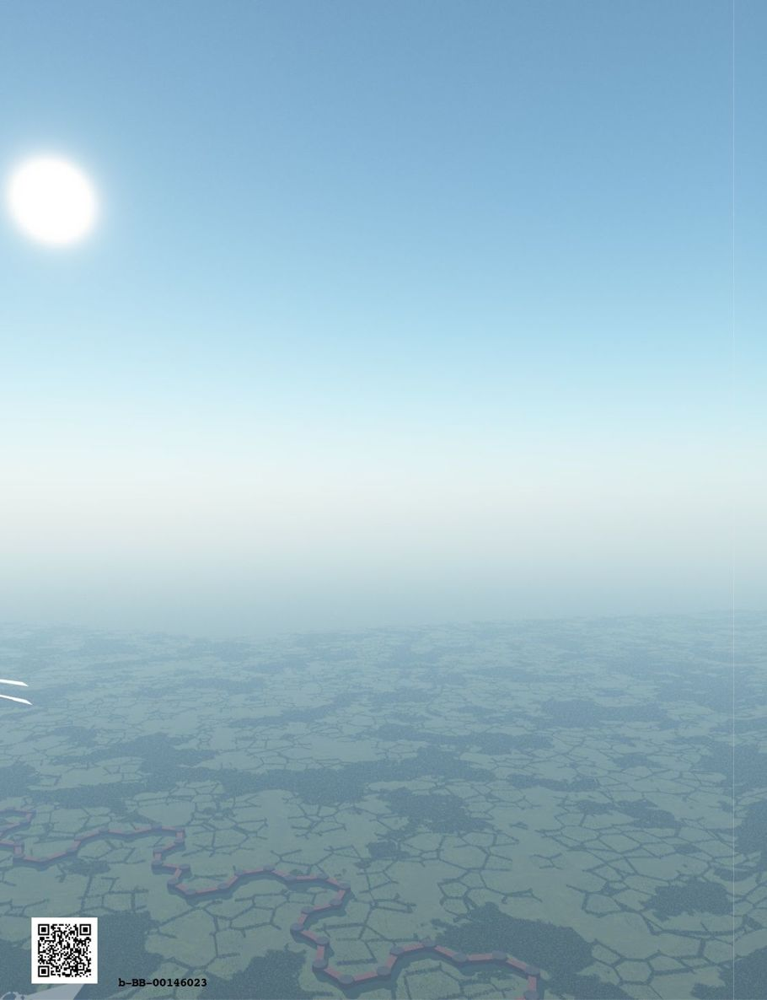

| ファンタジー世界構築のための質問リスト⑤: 日常生活編 (RasenWorks) | |
| 神楽坂らせん | |
| RasenWorks (2016) | |
Patricia C. Wredeによる"Fantasy Worldbuilding Questions" http://www.sfwa.org/tag/world-building/ の日本語訳です。
月刊群雛2014年08月号～2015年02月号まで全５回連載された「異世界構築質問リスト」をまとめました。
───────────────────────
はじめに
この質問リストは、自らの創作物語のために、現実感あふれる架空の世界観を構築しようという、ファンタジー作家の試みを支援するものです。
数多くの質問リストの中から、今回は「日常生活」に関する質問をピックアップしました。
原文では、いくつかの質問が複数の項目に併記されています。この和訳版の質問リストでは可読性を重視し、本項での初出の質問のみ残しました。重複する質問については初出の参照先を明記してありますので、そちらをご覧ください。その他、この原稿に掲載できなかった質問については、『月刊群雛』やシリーズ別巻、または『ファンタジー世界構築のための質問リスト〈完全版〉』をご参照ください。
これらの質問の多くは、ある物語にとっては参考になったり不可欠であったりしますが、すべての物語の条件・状況に適合できるほど万能なものではありません。小説を書き始める（もしくは書き終える）ために必要な全ての、あるいはいくつかの質問に、作家が必ず答えなければならないというものでもありません。
矛盾のない......あるいは、つじつまが合わない世界観と背景とは、どのようなものなのかと、作家に考えていただこうという発想から、この質問リストをご用意いたしました。お役に立ちそうならば、どうぞご活用ください。そうでなければ、そっと閉じてください。
この質問リストは、網羅的なものでも最終的なものでもありません。しかし、作家一人ひとりが個々の架空世界についてリストをまとめようとする場合の、きっかけにはなるでしょう。
【異世界構築質問リスト】
●日常生活
［Ａ 一般］
（１）普通の人々は、外国人にどのような印象を抱いていますか？ 単に住む場所が違う人々ですか？ それとも非人間？ 彼らは異なる考えを受け入れることにどの程度の心の準備ができていますか？ 彼らはどれくらい国際的ですか？
（２）社会的階層が上下することについて、そうした社会的流動性はどれくらいありますか？ これについて人々はどう考えていますか？ 社会的階層の移動は人々にとって簡単ですか？ それとも、困難ですか？ 中流階級に向かって躍進しようとする農夫、あるいは上流階級や高貴な人が中流階級になるなどの時、どんな抵抗があるでしょうか？ そのような人は社会的に認められるでしょうか？ → 社会組織Ａ（６）へ
（３）どんなアイテムや食糧、材料が贅沢品になりますか？ チョコレートやコーヒー、絹、香辛料、水洗トイレ、等。 それはなぜでしょうか？
（４）人間は、一般にどのような外見ですか？ ブロンド（または赤毛の人やブルネット）は群衆の中で目立つでしょうか？ ５フィート10インチ（約１・８ｍ）の背丈は高い方？ それとも低い方？ 非人間は群衆の中で目立ちますか？ それとも、普通に人々に混ざっていますか？ それは、通常のことですか？
（５）個人衛生の常識はどんなものですか？ ほとんどの人が定期的に入浴しますか？ それとも、入浴すると健康を害すると考えられていたりしますか？
（６）ごみやその他の廃棄物はどのように処分されていますか？
（７）家具はどのようなものですか？ 大きくブロック状？ 繊細？ 単純？ 精巧な彫刻？ 塗装されている？ 主に何で作られていますか？ 布？ 木？ 石？ アームレストを備えた椅子のような特定の家具は高ステータス者のための物ですか？
（８）家具の設計には、どのように人々の習慣やライフスタイルが反映されていますか？ 例えば、使用人が警告なく部屋に入ってきた中世の頃に使われたプライバシー用カーテンを備えたベッドや、小さなスペースの家ばかりの国で使われる、巻きとることができ、ベッドの代わりに片付けることができる布団等。
（９）上下水道と衛生システムは、どんなものがありますか？ 誰が、それらを造って、維持しますか？ それはどれくらい信頼できますか？ 排水管が逆流したとき、あなたは誰に電話をしますか？ それらは、どのように都市と農場では異なりますか？
（10）火災、洪水、竜巻やハリケーン、吹雪、ペスト等。人々は様々な災害にどのように対処しますか？ そのような災害はどの程度一般的ですか？
（11）都市の人々は朝どれくらい早く起きますか？ 地方では？ 時計は一般的ですか？ または、太陽の角度を見て時間を知りますか？ それとも、教会の鐘に聞き耳を立てることによって、人々は時刻を知るのでしょうか？
［Ｂ ファッションと服装］
（１）人々は、何を着ていますか？ 衣服は、どの程度高価ですか？ 材料は地元で生産することができますか？ または、それの一部か全ては輸入しなければなりませんか？
（２）武器（例えば剣やピストル）は、社会の一部または全部の階層のための服装の標準的な部分ですか？ → 社会組織Ｇ（10）へ
（３）特定の服は、特定の仕事のために慣習になっていますか？ 例えば、軍服、裁判官のローブ／かつら、スポーツ・チームのユニフォーム等。 これらはどの程度の変化が許されていますか？ 学者は、長すぎず、正しいカットの輝く緑のローブを着用しなくてはならない等の厳格な決まりがありますか？ そうした決まりは数多くありますか？ それらに最も重要であるのは色ですか？ それともスタイルですか？
（４）紫や藍色等の特定の色の染料や布が、貴族や高ステータスの人々専用色となっている特別な色はありますか？ また、その色だけ価格が高かったり高級だったりしますか？
（５）誰が何を着ることができるかについて定めた、贅沢を規制する法律はありますか？ 罰則は何でしょうか？ 変更が必要な時には誰が決めますか？ どのくらいの頻度でそれらが調整されていますか？
（６）服の他にファッションや流行がありますか？ 車、インテリアのデザイン・スタイル等？
（７）魔法にファッションや流行はありますか？ そのハーブの呪文は「アウト」。今年流行中なのは呪文じゃなくて儀式よ！ 等。 → 魔法と魔術師Ｂ（26）へ
（８）普通の人はどれだけ多くの替えの服を買う余裕がありますか？ 高貴な人では？ 農民では？
（９）服の現在の流行は、何ですか？ 帽子では？ 宝石では？ 靴では？ そのようなファッションは、人間／非人間では異なりますか？ 都市と地方の間ではどうでしょうか？
（10）どんな材料がこの国や地域の気候にふさわしいですか？ 一部の材料を輸入しなくてはならないでしょうか？ それは高価な上流階級向けの衣服用だけですか？
（11）どんな物事が品がなくて低俗であると思われますか？ そして、何がスマートでカッコ良いと思われていますか？
（12）装飾品やアクセサリーにはどのようなものが一般的ですか？ どんな色や組み合わせは綺麗に見えたり、逆に魅力が無くなると考えられていますか？ それについての意見は、種族間では変わりますか？
（13）今ここではどんな身体的なタイプや特徴がファッショナブルで、逆はそうでないと思われていますか？ 褐色ＶＳ青白い皮膚、肺病持ちＶＳ超健康、太っちょＶＳガリガリ、ブロンドＶＳブルネット、筋肉質ＶＳひ弱な詩人体型等？
（14）ヒト以外のファッションは、どのようにその生理機能を反映しているのでしょうか？ ドラゴンは夕食のためにドレスアップしますか？ 人魚はヌードタブーを持っていますか？
［Ｃ マナー］
（１）食品の量と質以外に、正式なハイクラスのディナーと通常の食事はどのように異なりますか？ ハイクラスのマナーは普通人の日常のものとは異なるのですか？ → 人々と風習Ｃ（３）へ
（２）人々の礼節で優先順位の規則はどんなものがありますか？ 誰が、最初にドアを通り抜けることになっていますか？ 誰が最初に紹介されますか？
（３）日常のマナーに公式や非公式、高等裁判所での所作等の区別はありますか？ いつ、どこで人々は最高の行動をとるようになっているでしょうか？
（４）この社会の「良いマナー」は、どれくらい重要ですか？ どんなことが日常的なマナーを構成しますか？ これらはどのように人種間で異なりますか？ 彼らの価値観によって、口では言えないほど大変失礼な目にあったとき、ドワーフは、エルフは、ドラゴンは、そして人間はどう反応するでしょうか？
（５）ゲストが到着すると、まず提供されるのが通例である食べ物や飲み物はありますか？ それは何でしょうか？ それとも提供はゲストのリクエストに応じてですか？ → 人々と風習Ｆ（５）へ
［Ｄ ダイエット］
（１）特別な祭日用の料理等がありますか？ どのような食品／飲料が、特定の休日、葬式、結婚式等のイベントや季節と関連していますか？ → 人々と風習Ｃ（２）へ
（２）食品の量と質以外に、正式なハイクラスのディナーと通常の食事はどのように異なりますか？ ハイクラスのマナーは普通人の日常のものとは異なるのですか？ → 人々と風習Ｃ（３）へ
（３）ゲストが到着すると、まず提供されるのが通例である食べ物や飲み物はありますか？ それは何でしょうか？ それとも提供はゲストのリクエストに応じてですか？ → 日常生活Ｃ（５）へ また、ちょうど出発しようとしているゲストに提供する旅立ちの杯等の習慣はありますか？
（４）衛生上、未処理の生水は飲んでも十分安全ですか？ そうでなければ、どのような物を人々は代わりに飲むのですか？ → 人々と風習Ｃ（７）へ
（５）宗教上食べてはいけない等の「これは、食用であっても、食べられません！」といったものはありますか？ それはなぜですか？ いくつかの一般的なヒトの食品は、ドワーフやエルフには有毒ですか？ 逆に人間には有毒なものがありますか？ → 人々と風習Ｃ（９）へ
（６）この社会の魔法／技術レベルで考えた場合、都市住民と農業者や食品製造業者の適切な比率はどのくらいですか？ 農業生産が魔法に基づいている場合（気象予測、制御、土地の肥沃度調整等）、どれくらい多くの都市住民は、農業支援魔法が突然停止したら餓死してしまうでしょうか？ → 魔法と魔術師Ｄ（11）へ
（７）一日に食事は何回あるのが正常であると考えられていますか？ いつそれらが提供されますか？ （朝、昼、晩？） どの食事が本格的で、どの食事がより簡単なものでしょうか？ 主にある食品（例えば卵とベーコン）は特定の食事のために用意されますか？
（８）この地域に特産の食品や調味料などはありますか？ それはどんなワイン？ どんなチーズ？ どんなビール？
（９）どのような食品が農民の食物と考えられますか？ どんな食品が毎日一般に食べられる主要産物ですか？ どんな食品が珍しいでしょうか？ 料理はどのように行いますか？ それらは加熱調理されるのが一般的ですか？ それとも生食ですか？
（10）食品的（訳注：口に入れるが食料でないもの？）なものでは、どんな薬草や香辛料が容易に利用可能でしょうか？ または入手困難で輸入せざるを得ないものはどれになるのでしょうか？ 食品と香辛料の輸入はどれくらい一般的／高価ですか？
（11）どんなスパイスやハーブは、地元で生産されていますか？ それらは希少で高価でしょうか？ どれが最も一般的に使用されていますか？ 人々はとてもスパイシーな食べ物を好む傾向がありますか？
（12）食物は、どのようにシーズンオフ中の使用のために取っておかれますか？ スモーク、缶詰め、塩漬け、乾燥等？ 使用される方法はどれくらい信頼できますか？ 「保存されていた」食物は、どれくらいの頻度や時間でダメになりますか？
（13）食物が限られた供給になっているとき、誰が最初に食べることができなくなりますか？ 労働者？ それとももっと生産するために働かなければならない農民？ または次世代の担い手である子供たち？ または、賢くて尊ばれた年長者？ それとも、高貴な人ですか？
（14）非人間はどんな食品と調味料が好きですか？ そして、どのように、これらは人間族の支持する食品と異なりますか？ ある種族にとって、ごちそうであったり有毒である一部の食品は、別の種には不愉快であったり、逆に必須食物であったりしますか？
（15）人々が断食することになっている時期がありますか？ 例えば、統治者の死亡等の後、四旬節またはラマダンの間に、子供の出生の後、冬至の前等に。
（16）道と輸送の状況を考えると、腐ってしまう前に所定の場所にどれくらいの食物を送ることができますか？ （これは都市のサイズの上限を意味します。） → 商業、貿易、公的生活Ｉ（４）へ
［Ｅ 教育］
（１）様々なレベルの教育を受けるコストはいくらかかるのでしょうか？
（２）教育の組織化されたシステムはありますか？ もしあるなら、誰がそれを提供していますか？ 政府、教会、民間人？ それはどのようにサポートされていますか？ 魔法は、一般的な大学のカリキュラムの一部と考えられていますか？ それとも、個人的にそれを勉強しなければならないのですか？ → 社会組織Ｂ（14）へ
（３）どんな種類の教育が利用可能ですか？ どこで？ すべての町に学舎がありますか？ それとも、教育を受けたい場合、普通の人々は遠く学都へ旅しなければなりませんか？ 大学はありますか？ 家庭教師ですか？
（４）一般集団の読み書きの能力のレベルはどのぐらいですか？ 読み書きは貴族のためのスキルですか？ 筆記者や従業員、弱者それともブルジョアジーに必要性があるものと考えられていますか？ 本は、どれくらい一般的ですか？ どのように本は生産されますか？ 印刷？ それとも手書きによる筆写ですか？
（５）教師は何者ですか？ 彼らはどのように訓練されていますか？ 誰が賃金を支払うのでしょうか？
（６）どれだけのレベルの教育が、社会の様々なクラスそれぞれで普通であると考えられていますか？ どんな教育が知る必要のある紳士／貴族に、絶対に必要であると考えられますか？ 商人にはどうですか？
（７）詩、言語、話術等、どれだけの知識やスキルが廷臣のために絶対に必要と考えられていますか？ 素晴らしいけれども不必要なものはありますか？ 誰かにそれを知られた場合には非常に恥ずかしいことになるようなものはありますか？ （例えば漫画への情熱等）
（８）教師や学者はどのように尊重されていますか？ 誰がそれをサポートしていますか？
（９）魔法の研究を必要とする場合、それについて学ぶためにどこへ行きますか？ 誰が彼らの訓練に資金を供給しますか？ 徒弟制度はありますか？ それとも魔術専門学校がありますか？ １対１の個別指導／伝授はありますか？ 訓練を受けていない魔術師は、危険人物？ あるいは単に普通の人ですか？ → 魔法と魔術師Ｂ（15）へ
（10）魔術師は魔法のために使用される特殊な言語を持っていますか？ もしそうなら、どこでそれを学ぶのですか？ この言語でおしゃべりをしても安全ですか？ すべてが自動的に魔法効力を発生してしまうなら、どうやって安全に新入生に教えることができますか？ → 魔法と魔術師Ｂ（16）へ
［Ｆ カレンダー］
（１）（時間の測定方法を含む）単一の、一般的に受け入れられているカレンダーがありますか？ または別の国や民族や人種で異なるものがありますか？ → 物理的および歴史的特長Ｄ（９）へ
（２）どのように１日はより小さな時間単位に分けられますか？ それらはどういった呼び名でしょうか？ ヒバリの時間、日の出の鐘、九時課（訳注：修道院等で唱えられる聖務日課の１日７回あるうちの５回目の祈り）等。 時の名称は、何かに関連しますか？ １時間の長さは固定ですか？ それとも、それは、季節の変わり目とともに日照時間の変化にしたがって変わりますか？
（３）カレンダーの月の名前がありますか？ 区分は何日ごとにありますか？ 週は何日？ 年は何か月？ うるう年はありますか？ もしそうなら、誰が（訳注：天体運行と時の関係性の）追跡を続けますか？
（４）一般的な休日やお祭りの日はどの日ですか？ 彼らは何を祝うのですか？ 一つの国、都市、または特定の地域だけで祝われる祭日はありますか？
（５）人々は、年数を計算するためにどんな出来事を利用しますか？ それは、第一次世界大戦の終了の日、原子力発明の瞬間等の単一の出来事を使用しますか？ それとも、ティベリウス・ユリウス・カエサルの治世の１２年目、漢王朝の３０１年目等の繰り返されるイベントに基づいて日付をカウントしますか？
（６）人々は、どうやって今が何時であるか知りますか？ 時計、腕時計、日時計等がありますか？ または、人々は城か教会の鐘の音に聞き耳を立てなければならないでしょうか？ それとも太陽の角度を見て考えますか？
（７）マルディグラ（訳注：謝肉祭の最終日、灰の水曜日の前日を意味するフランス語、英語では「Shrove Tuesday」（告解火曜日、懺悔の火曜日）に相当する移動祝祭日）または愚者の饗宴（訳注：中世カトリック教会の下級僧が中心になってクリスマスと新年の間に祝われたもの。祭り中は通常の秩序や価値観が逆転する）のように、「その年の外部」と考慮される日がありますか？ どのようにこれらの日は慣習的に行われていますか？ それらはどのように始まったでしょうか？
初出一覧
月刊群雛２０１４年８月号「ファンタジー世界構築のための質問リスト １」に掲載
●ワールド：基本原則／パラレルワールドの地球／地球とはまったく違う異世界
●物理的および歴史的特徴：一般／気候と地理／天然資源／世界史／特殊な国（々）の歴史
●魔術と魔術師：マジックのルール／魔術師（ウィザード）／魔法とテクノロジー／その他の魔法の質問
月刊群雛２０１４年９月号「ファンタジー世界構築のための質問リスト ２」に掲載
●人々と風習：一般／習慣・風習／食事／挨拶や会議／ジェスチャー／訪問／言語／倫理と価値観／宗教と神々／人口
月刊群雛２０１４年１１月号「異世界構築質問リスト ３」に掲載
●社会組織：一般／政府／政治／犯罪と法制度／外交／行われている戦争／兵器
月刊群雛２０１４年１２月号「異世界構築質問リスト ４」に掲載
●商業、貿易、公的生活：一般／ビジネスと産業／交通・通信／科学技術／医療／芸術とエンターテイメント／建築／都市要因／農村要因
月刊群雛２０１５年２月号「異世界構築質問リスト ５」に掲載
●日常生活／一般／ファッションと服装／マナー／ダイエット／教育／カレンダー
あとがき
本書はPatricia C. Wredeさんが1996年に発表された"Fantasy Worldbuilding Questions"の日本語版です。
発表された場所は、アメリカの創作手法やツールについて活発にやりとりされているＳＦＷＡ（サイエンス・フィクション＆ファンタジー著者協会）のWebサイトです。
最初に原文を見つけた時は、一見してあまり文章量もないし、自分に必要がありそうな部分だけ訳して使ってみたら良いかなぁ。程度の軽い気持ちだったのでした。
しかし、サイトのリンクを巡ってみると、あとからあとからどんどんとクエスチョンの波があらわれ、あっという間に広大な質問の海におぼれてしまいました。底に足もつかず、息継ぎもできない深い深い難問の海です。
世界を創ることは、自分が考えていた以上に深く、創作の海の深淵へと潜る必要があるのだと気がついた時にはもう後の祭り。あっぷあっぷで酸欠状態。脳に酸素が行き渡らない精神的潜行の苦しみが襲いかかってきたのです。でも、でも......、苦しいけれど、もう少し、もう少し、とクエスチョンの深みへ潜ってみると、いつしかこれが快感にかわってきてしまい......。ヤバイですね、クセになっちゃいました。（笑）
そんな苦しみとカイカンを、同じく創作を志す皆様に知ってもらえれば、と、日本独立作家同盟発行の『月刊群雛』で翻訳文を２０１４年８月号から不定期連載で全５回にわたって発表させていだだきました。
本書はその五回分の原稿から第五回分を再構成し、【日常生活編】としてまとめたものです。
私の拙い英語力を信頼して和訳を快諾いただいた著者の Patricia C. Wrede さん、誤字脱字誤訳チェックを怒涛の勢いで行ってくださった『月刊群雛』編集チームの竹元かつみさん、晴海まどかさん、編集長の鷹野凌さん、その節はたいへんお世話になりました。残念ながら『月刊群雛』は２０１６年８月号で休刊してしまいましたが、文芸作品だけでなく、このようなツールの翻訳文も掲載してもらえた懐の深い雑誌でした。とても良い経験をさせていただきました。大いなる感謝を贈らせていただきます。
それから、急なお願いやワガママに嫌な顔ひとつせずステキでめっちゃ魅力的な表紙絵を提供してくださった米田淳一先生、とってもとってもありがとうございます！ 分冊に当たっても表紙の加工をお忙しいのに一瞬でやってくださいました。超感謝です！
なお、日本語訳のわけわからなさと読みにくさの全責任は私にあります。原文もＳＦＷＡのページで公開されていますので、変だなと思ったら原文を参照していただき、私のほうにもご一報いただければ嬉しく思います。
そして、この、ただただ質問が並んでいるだけというなんともマニアックで奇妙な本を手に取り、最後まで読んで下さった皆様、本当にありがとうございます。
２０１６年８月１日
神楽坂らせん
既刊情報
神楽坂らせんの作品
『ファンタジー世界構築のための質問リスト〈完全版〉』
アメリカファンタジー＆SF著者協会：SFWAのPatricia C. Wredeによる "Fantasy Worldbuilding Questions" の日本語訳です。
日本独立作家同盟の『月刊群雛』2014年８月号～2015年2月号まで全５回連載された「異世界構築質問リスト」をすべてまとめ、さらに独自の視点でSF向けの質問集も追記されています。
http://fwbqj.tumblr.com/
『らせん式ドラマロジー入門』
FreeMindというフリーウェアを使った、近代的らせん式小説執筆術の真髄をあますところなく大公開！
パソコンを使った執筆活動に興味がある方におすすめのロジカル小説執筆メソッド集のをボリュームたっぷりにお届け！
（プロは読まないでね！）
http://dramarogy.tumblr.com/
『yWriterで物語を書こう』
yWriter5という小説家向けのワードプロセッサがあります。
http://www.spacejock.com/yWriter5.html
このソフトを使って簡単な小説（今回は昔話に挑戦）を書く手法をまとめてみました。
おそらく本邦初の日本語解説書になるかとおもいます。
とっつきにいソフトですが、使い方がわかると大変強力な創作支援ツールです。
このツールの使い方はもちろん、小説の書き方も含めて知りたい方は是非御覧ください。
http://ywriter.tumblr.com/
『秀丸で傑作を書く！シリーズ』
不朽の名作テキストエディタ、「秀丸エディタ」を使って文章作品を書く
ノウハウを丁寧に解説した、極限までわかりやすい秀丸エディタガイドブックです。
・秀丸で傑作を書く！① 基本操作＆環境設定篇
http://hidehon1.tumblr.com/
・秀丸で傑作を書く！！② 正規表現＆アウトライン篇
http://hidehon2.tumblr.com/
『らせんのせかい』
日本独立作家同盟発行の『月刊群雛』にちょこちょこと掲載させていただいた作品たちの中から、ＳＦ作品だけを集めて短編集を作ってみました。２０１４年０６月号〜２０１６年０８月号まで、２年と２ヶ月の成長を一目で見れる作品集となっています。
http://rasenworld.tumblr.com/
『ふたりのブルべ～姉妹編』
「目的はイケメン・ゲット！」そんなちょっと（？）よこしまな理由で自転車の長距離マラソンイベント「ブルベ」に参加することに決めた早苗。 そこで出会ったのはなんと「理想の女性」だった！？
超ハイテンションノンストップ乙女ラブ＆ロングライド自転車ストーリー ここに開幕！
http://futaribrevet.tumblr.com/

ファンタジー世界構築のための質問リスト⑤
2016年8月1日 発行
著 者：Patricia C. Wrede著 / 神楽坂らせん訳
発 行：RasenWorks
©2015 神楽坂らせん Printed in Japan

神楽坂らせん
神楽坂で螺旋力を研究しつつ、主に作家向けのツールを整備したり翻訳したりしています。
Google+プロフィールページ：google.com/+神楽坂らせん
Google+では『本が好き』コミュニティの管理人もさせてもらっています。
https://plus.google.com/communities/105217771127890240722
